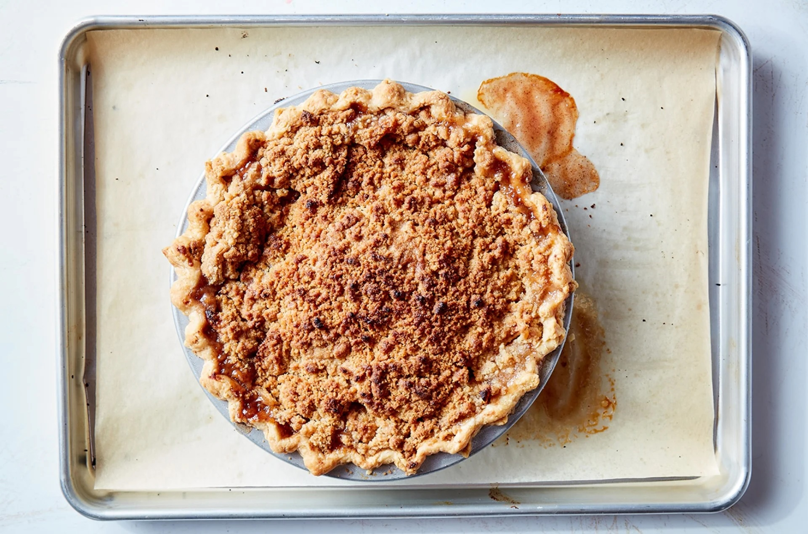

Apple Pie

Description
Indulge in this classic apple pie! With a buttery, flaky crust and a warm, spiced apple filling, it’s the perfect comfort food. Serve it warm with a scoop of vanilla ice cream for a timeless treat that always hits the spot!
Ingredients
Crust
- 1 cup all purpose flour
- 1/4 t salt
- 8 T butter, cold
- 2 T ice water
Filling
- 8 cups apples- peeled, cored, and sliced
- 3/4 cup sugar
- 1/4 cup all purpose flour
- 1 t cinnamon
- 1/4 t nutmeg
Topping
- 1 cup all purpose flour
- 1/2 cup brown sugar
- 8 T cold butter
Steps
- To make the crust: Place the flour and salt in a large bowl.
- Using two knives or a pastry cutter, work in the shortening until lumps the size of peas remain.
- The water should be ice cold and added gradually, mixing a little with a fork after each addition. Once you start to add the ice water, over-handling will make the crust tough, so try to keep handling to a minimum.
- When the dough starts to hold together a bit gather it with your hands and form it into a ball.
- Wrap and chill the dough for half an hour before rolling it out. While the dough is chilling, make the filling.
- To make the filling: Mix the apples with the flour, sugar and spices.
- Preheat the oven to 425°F.
- Transfer the dough to a floured board. Roll the dough until it's 2" larger in diameter than the top edge of the pie pan.
- Transfer the dough to the pan, and flute the edges.
- Pour them into the prepared pie pan.
- To make the topping: Cut the butter up with a knife a bit, then mix it into the flour and sugar with your hands or a fork until everything is mixed together but still a little lumpy.
- Spread this mixture evenly over the top of the apples.
- Place the pie on a baking sheet to catch any drips, and bake at 425°F for 15 minutes, then reduce heat to 350°F and bake for an additional 30 minutes.
- Remove the pie from the oven and cool to lukewarm before slicing.
- Store, refrigerated, for up to 5 days. Freeze for up to 3 months.